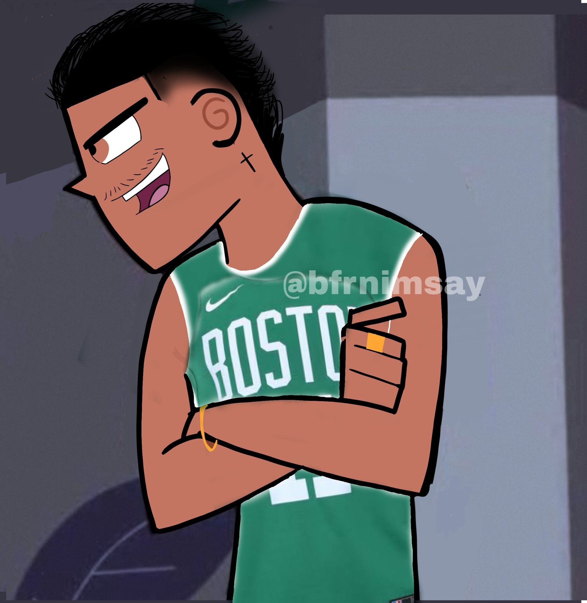

Basketball
I first knew and started playing basketball on elementary school, on my 3rd or 4th grade, and I kept this passion till the end of my high school. I was never very consistent, because the sport was never a priority to me, but rather a fun and athletic distraction.
When I got in high school, I started growing abruptly and went from ~1.55m to ~1.70m in a year span, which led a spark to train harder and even get to the school's main team- this was one of the key things that made me quit as League of Legends Pro player-. While in my school's main team, I played several tournaments and we got some good qualifications citywide. I executed my role as a small reserve player in the team's rotation even playing as a starter in one or two games, but my basketball carrer was short, as I started to focus more on the off court such as programming and MUNs.
By the start of 2020, I wanted to return to play again as a hobby and a physical activity in my university team, but this far I have only got two play one or two games with some friends.
 Thanks, COVID.
Even though I'm unable to play, this year served to stright my relationship with my team, the Boston Celtics, as I wasn't watching the past season because I didn't like the Celtics Kyrie team.
So far this year I've watched all of their games, and I'm already crossing fingers for the start of the next season, as we came short in the Eastern Conference Finals.
And, before you ask, my West Conference team is all the way Dallas Mavericks. I liked the Dirk era and I think the team and the fans are awesome.Now, with the adition of Luka, it's undeniably my second team. I love seeing Luka on court and it's crazy to think he's just a year older than me!